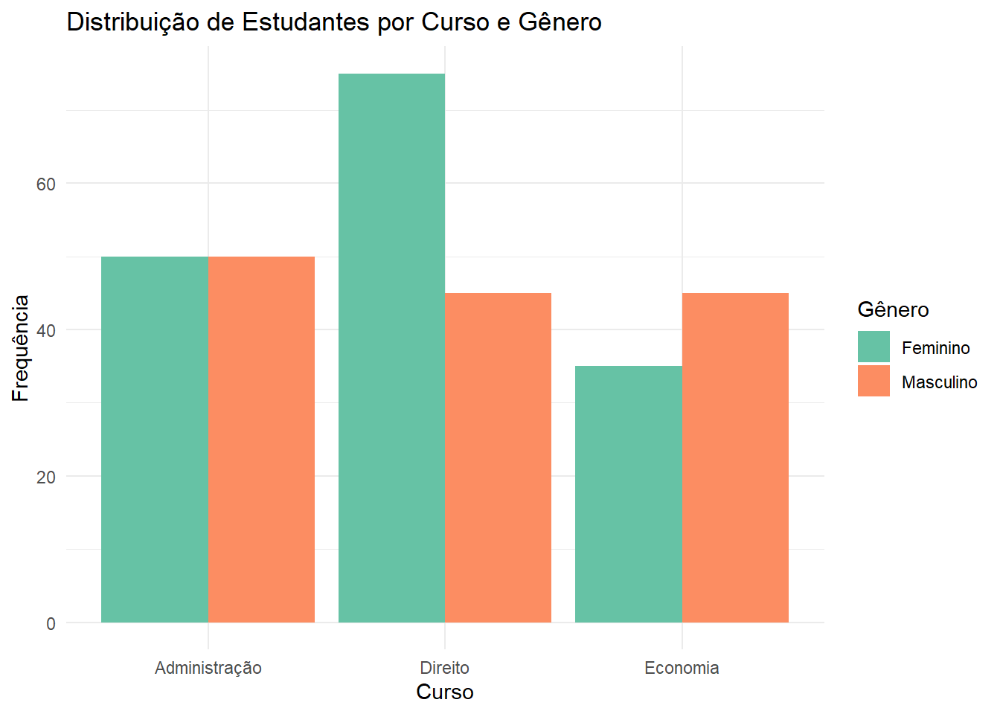
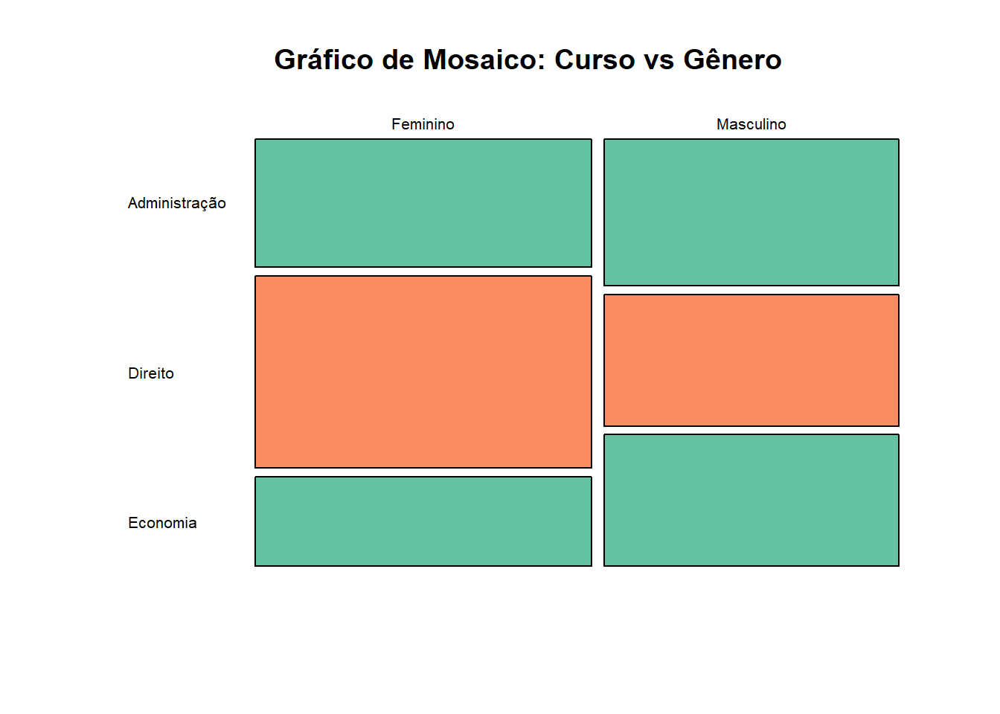
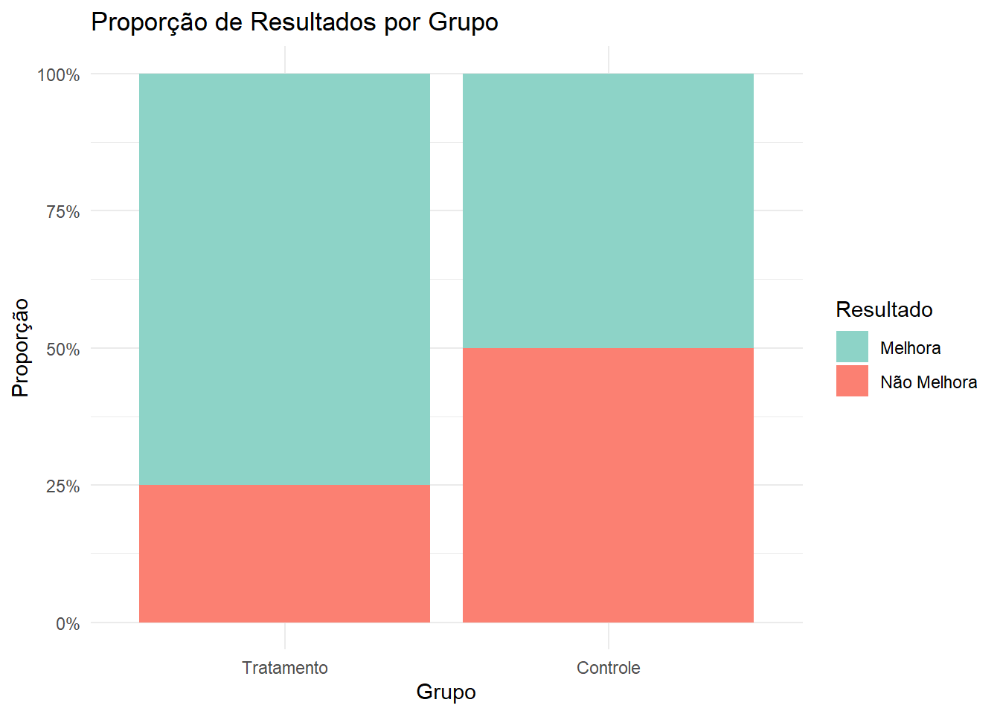
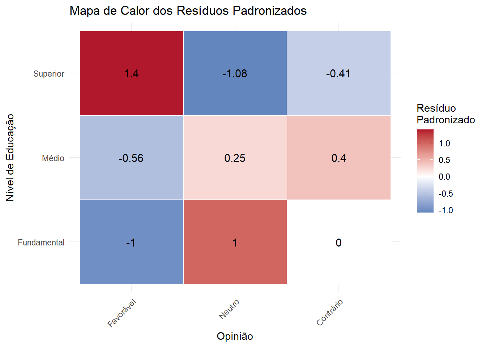

Quando trabalhamos com duas variáveis categóricas, frequentemente queremos saber se existe uma associação entre elas. Por exemplo:
Existe relação entre sexo e preferência por determinado produto?
Há associação entre nível de escolaridade e opinião sobre uma política pública?
O tratamento aplicado está relacionado com o resultado obtido?
O teste qui-quadrado (χ²) é uma das ferramentas estatísticas mais utilizadas para responder a essas questões.
18.2 Tabelas de Contingência
Antes de realizar o teste qui-quadrado, organizamos os dados em uma tabela de contingência (ou tabela cruzada), que mostra as frequências observadas para cada combinação de categorias das duas variáveis.
18.2.1 Exemplo 1: Preferência de Curso e Gênero
Code
```{r}#| label: tbl-exemplo-curso-genero#| tbl-cap: "Distribuição de estudantes por curso e gênero"library(tidyverse)library(knitr)# Criando dados de exemplodados_curso <-data.frame(Curso =c(rep("Direito", 120), rep("Economia", 80), rep("Administração", 100)),Genero =c(rep("Feminino", 75), rep("Masculino", 45),rep("Feminino", 35), rep("Masculino", 45),rep("Feminino", 50), rep("Masculino", 50)))# Tabela de contingênciatabela_cont <-table(dados_curso$Genero, dados_curso$Curso)kable(tabela_cont, caption ="Frequências Observadas")# Adicionar totais marginaistabela_com_totais <-addmargins(tabela_cont)kable(tabela_com_totais, caption ="Frequências Observadas com Totais")```
Tab. 18.1 Distribuição de estudantes por curso e gênero
Frequências Observadas
Administração
Direito
Economia
Feminino
50
75
35
Masculino
50
45
45
Frequências Observadas com Totais
Administração
Direito
Economia
Sum
Feminino
50
75
35
160
Masculino
50
45
45
140
Sum
100
120
80
300
18.2.2 Proporções
Também é útil examinar as proporções:
Code
```{r}#| label: tbl-proporcoes#| tbl-cap: "Proporções por linha e coluna"# Proporções por linhaprop_linha <-prop.table(tabela_cont, margin =1)kable(round(prop_linha, 3), caption ="Proporções por Linha (Gênero)")# Proporções por colunaprop_coluna <-prop.table(tabela_cont, margin =2)kable(round(prop_coluna, 3), caption ="Proporções por Coluna (Curso)")```
Tab. 18.2 Proporções por linha e coluna
Proporções por Linha (Gênero)
Administração
Direito
Economia
Feminino
0.312
0.469
0.219
Masculino
0.357
0.321
0.321
Proporções por Coluna (Curso)
Administração
Direito
Economia
Feminino
0.5
0.625
0.438
Masculino
0.5
0.375
0.562
18.3 O Teste Qui-Quadrado de Independência
18.3.1 Hipóteses
H₀ (Hipótese Nula): As duas variáveis são independentes (não há associação)
H₁ (Hipótese Alternativa): As duas variáveis são dependentes (há associação)
Os graus de liberdade para o teste qui-quadrado são:
\[
gl = (r - 1) \times (c - 1)
\]
Onde r é o número de linhas e c é o número de colunas.
18.3.6 Interpretação
Se o valor-p < α (geralmente 0,05):
- Rejeitamos H₀
- Concluímos que há evidência de associação entre as duas variáveis categóricas,
Se o valor-p ≥ α:
- Não rejeitamos H₀
- Não há evidência suficiente de associação.
18.4 Visualização
18.4.1 Gráfico de Barras Agrupadas
Code
```{r}#| label: fig-barras-agrupadas#| fig-cap: "Distribuição de estudantes por curso e gênero"library(ggplot2)# Preparar dados para visualizaçãodados_viz <-as.data.frame(tabela_cont)names(dados_viz) <-c("Genero", "Curso", "Frequencia")ggplot(dados_viz, aes(x = Curso, y = Frequencia, fill = Genero)) +geom_bar(stat ="identity", position ="dodge") +labs(title ="Distribuição de Estudantes por Curso e Gênero",x ="Curso",y ="Frequência",fill ="Gênero") +theme_minimal() +scale_fill_brewer(palette ="Set2")```

Fig. 18.1 Distribuição de estudantes por curso e gênero
18.4.2 Gráfico de Mosaico
Code
```{r}#| label: fig-mosaico#| fig-cap: "Gráfico de mosaico mostrando a relação entre curso e gênero"# Gráfico de mosaicomosaicplot(tabela_cont, main ="Gráfico de Mosaico: Curso vs Gênero",color =c("#66C2A5", "#FC8D62"),las =1)```

Fig. 18.2 Gráfico de mosaico mostrando a relação entre curso e gênero
18.5 Resíduos Padronizados
Os resíduos padronizados (ou resíduos de Pearson) ajudam a identificar quais células contribuem mais para o valor da estatística qui-quadrado:
Valores > +2: Frequência observada muito maior que a esperada
Valores < -2: Frequência observada muito menor que a esperada
Valores entre -2 e +2: Diferença não significativa
18.6 Exemplo 2: Tratamento e Resultado
Code
```{r}#| label: exemplo-tratamento# Dados: Efeito de um tratamentotratamento_resultado <-matrix(c(45, 15, # Grupo Tratamento: Melhora, Não melhora30, 30), # Grupo Controle: Melhora, Não melhoranrow =2, byrow =TRUE,dimnames =list(Grupo =c("Tratamento", "Controle"),Resultado =c("Melhora", "Não Melhora") ))kable(tratamento_resultado, caption ="Resultados por Grupo")# Teste qui-quadradoteste_tratamento <-chisq.test(tratamento_resultado)print(teste_tratamento)```
Resultados por Grupo
Melhora
Não Melhora
Tratamento
45
15
Controle
30
30
Pearson's Chi-squared test with Yates' continuity correction
data: tratamento_resultado
X-squared = 6.9689, df = 1, p-value = 0.008294
18.6.1 Visualização dos Resultados
Code
```{r}#| label: fig-tratamento#| fig-cap: "Comparação de resultados entre grupos"# Converter para formato longodados_trat <-as.data.frame(as.table(tratamento_resultado))names(dados_trat) <-c("Grupo", "Resultado", "Frequencia")ggplot(dados_trat, aes(x = Grupo, y = Frequencia, fill = Resultado)) +geom_bar(stat ="identity", position ="fill") +labs(title ="Proporção de Resultados por Grupo",x ="Grupo",y ="Proporção",fill ="Resultado") +scale_y_continuous(labels = scales::percent) +theme_minimal() +scale_fill_manual(values =c("#8DD3C7", "#FB8072"))```

Fig. 18.3 Comparação de resultados entre grupos
18.7 Pressupostos do Teste Qui-Quadrado
Para que o teste qui-quadrado seja válido:
Observações independentes: Cada observação deve pertencer a apenas uma célula da tabela
Frequências esperadas adequadas:
Todas as frequências esperadas devem ser ≥ 1
Pelo menos 80% das frequências esperadas devem ser ≥ 5
Amostra aleatória: Os dados devem vir de uma amostra aleatória
18.7.1 Verificando os Pressupostos
Code
```{r}#| label: verificar-pressupostos# Verificar frequências esperadascat("Frequências Esperadas:\n")print(round(teste_tratamento$expected, 2))# Verificar se alguma frequência esperada é < 5freq_baixas <-sum(teste_tratamento$expected <5)cat("\nNúmero de células com frequência esperada < 5:", freq_baixas, "\n")if(freq_baixas >0) {cat("ATENÇÃO: Existem células com frequência esperada < 5\n")cat("Considere usar o teste exato de Fisher\n")}```
Frequências Esperadas:
Resultado
Grupo Melhora Não Melhora
Tratamento 37.5 22.5
Controle 37.5 22.5
Número de células com frequência esperada < 5: 0
18.8 Teste Exato de Fisher
Para tabelas 2×2 com frequências esperadas baixas, use o teste exato de Fisher:
Code
```{r}#| label: teste-fisher# Teste exato de Fisher (exemplo com dados pequenos)dados_pequenos <-matrix(c(8, 2,3, 7),nrow =2,dimnames =list(Grupo =c("A", "B"),Resultado =c("Sucesso", "Falha") ))kable(dados_pequenos, caption ="Exemplo com Frequências Baixas")# Teste de Fisherfisher.test(dados_pequenos)```
Exemplo com Frequências Baixas
Sucesso
Falha
A
8
3
B
2
7
Fisher's Exact Test for Count Data
data: dados_pequenos
p-value = 0.06978
alternative hypothesis: true odds ratio is not equal to 1
95 percent confidence interval:
0.8821175 127.0558418
sample estimates:
odds ratio
8.153063
18.9 Medidas de Associação
18.9.1 V de Cramér
Para medir a força da associação (independente do tamanho da amostra):
\[
V = \sqrt{\frac{\chi^2}{n \times \min(r-1, c-1)}}
\]
Code
```{r}#| label: cramer-v# Função para calcular V de Cramércramer_v <-function(qui_quadrado_test) { chi2 <- qui_quadrado_test$statistic n <-sum(qui_quadrado_test$observed) min_dim <-min(dim(qui_quadrado_test$observed)) -1 v <-sqrt(chi2 / (n * min_dim))return(as.numeric(v))}v_cramér <-cramer_v(resultado_teste)cat("V de Cramér:", round(v_cramér, 3), "\n")# Interpretaçãocat("\nInterpretação do V de Cramér:\n")cat("0.00 - 0.10: Associação fraca\n")cat("0.10 - 0.30: Associação moderada\n")cat("0.30 - 1.00: Associação forte\n")```
V de Cramér: 0.158
Interpretação do V de Cramér:
0.00 - 0.10: Associação fraca
0.10 - 0.30: Associação moderada
0.30 - 1.00: Associação forte
18.9.2 Odds Ratio (para tabelas 2×2)
Code
```{r}#| label: odds-ratio# Calcular Odds Ratio para tabela 2x2if(all(dim(tratamento_resultado) ==c(2, 2))) {# Odds de melhora no grupo tratamento odds_tratamento <- tratamento_resultado[1,1] / tratamento_resultado[1,2]# Odds de melhora no grupo controle odds_controle <- tratamento_resultado[2,1] / tratamento_resultado[2,2]# Odds Ratio or <- odds_tratamento / odds_controlecat("Odds Ratio:", round(or, 3), "\n")cat("\nInterpretação:\n")cat("OR = 1: Sem associação\n")cat("OR > 1: Tratamento aumenta chances de melhora\n")cat("OR < 1: Tratamento diminui chances de melhora\n")# Intervalo de confiança (usando método de Woolf) log_or <-log(or) se_log_or <-sqrt(sum(1/tratamento_resultado)) ic_inf <-exp(log_or -1.96* se_log_or) ic_sup <-exp(log_or +1.96* se_log_or)cat("\nIC 95% para OR: [", round(ic_inf, 3), ",", round(ic_sup, 3), "]\n")}```
Odds Ratio: 3
Interpretação:
OR = 1: Sem associação
OR > 1: Tratamento aumenta chances de melhora
OR < 1: Tratamento diminui chances de melhora
IC 95% para OR: [ 1.385 , 6.499 ]
18.10 Exemplo 3: Tabela com Mais de Duas Categorias
Code
```{r}#| label: exemplo-educacao-opiniao# Dados: Nível de educação e opinião sobre uma políticaeducacao_opiniao <-matrix(c(20, 30, 15, # Fundamental35, 40, 25, # Médio45, 30, 20), # Superiornrow =3, byrow =TRUE,dimnames =list(Educacao =c("Fundamental", "Médio", "Superior"),Opiniao =c("Favorável", "Neutro", "Contrário") ))kable(educacao_opiniao, caption ="Educação vs Opinião")# Teste qui-quadradoteste_edu <-chisq.test(educacao_opiniao)print(teste_edu)# Resíduos padronizadoscat("\nResíduos Padronizados:\n")print(round(teste_edu$residuals, 2))# V de Cramérv_edu <-cramer_v(teste_edu)cat("\nV de Cramér:", round(v_edu, 3), "\n")```
Educação vs Opinião
Favorável
Neutro
Contrário
Fundamental
20
30
15
Médio
35
40
25
Superior
45
30
20
Pearson's Chi-squared test
data: educacao_opiniao
X-squared = 5.8316, df = 4, p-value = 0.2121
Resíduos Padronizados:
Opiniao
Educacao Favorável Neutro Contrário
Fundamental -1.00 1.00 0.00
Médio -0.56 0.25 0.40
Superior 1.40 -1.08 -0.41
V de Cramér: 0.106
18.10.1 Visualização com Heatmap
Code
```{r}#| label: fig-heatmap-residuos#| fig-cap: "Mapa de calor dos resíduos padronizados"library(reshape2)# Preparar dados dos resíduosresiduos_df <-melt(teste_edu$residuals)names(residuos_df) <-c("Educacao", "Opiniao", "Residuo")ggplot(residuos_df, aes(x = Opiniao, y = Educacao, fill = Residuo)) +geom_tile(color ="white") +geom_text(aes(label =round(Residuo, 2)), color ="black", size =4) +scale_fill_gradient2(low ="#2166AC", mid ="white", high ="#B2182B",midpoint =0, name ="Resíduo\nPadronizado") +labs(title ="Mapa de Calor dos Resíduos Padronizados",x ="Opinião",y ="Nível de Educação") +theme_minimal() +theme(axis.text.x =element_text(angle =45, hjust =1))```

Fig. 18.4 Mapa de calor dos resíduos padronizados
18.11 Relatando os Resultados
Ao relatar os resultados de um teste qui-quadrado, inclua:
Estatística qui-quadrado e graus de liberdade
Valor-p
Medida de associação (V de Cramér, Odds Ratio)
Interpretação substantiva
Exemplo de redação:
Foi realizado um teste qui-quadrado para avaliar a associação entre nível de educação e opinião sobre a política pública. Os resultados indicaram uma associação significativa entre as variáveis (χ² = 5.83, gl = 4, p = 0.212). A força da associação, medida pelo V de Cramér, foi de 0.106, indicando uma associação moderada. A análise dos resíduos padronizados revelou que…
18.12 Exercícios Práticos
18.12.1 Exercício 1
Uma pesquisa foi realizada para avaliar se há relação entre o tipo de mídia preferido e a faixa etária:
Code
```{r}#| label: exercicio-1# Dados do exercíciomidia_idade <-matrix(c(30, 45, 25, # 18-30 anos25, 35, 40, # 31-50 anos15, 20, 45), # 51+ anosnrow =3, byrow =TRUE,dimnames =list(Idade =c("18-30", "31-50", "51+"),Midia =c("Digital", "TV", "Impressa") ))kable(midia_idade, caption ="Preferência de Mídia por Faixa Etária")# Realize o teste qui-quadradoteste_ex1 <-chisq.test(midia_idade)print(teste_ex1)# Calcule o V de Cramérv_ex1 <-cramer_v(teste_ex1)cat("\nV de Cramér:", round(v_ex1, 3))```
Preferência de Mídia por Faixa Etária
Digital
TV
Impressa
18-30
30
45
25
31-50
25
35
40
51+
15
20
45
Pearson's Chi-squared test
data: midia_idade
X-squared = 18.318, df = 4, p-value = 0.001069
V de Cramér: 0.181
Questões:
Há evidência de associação entre faixa etária e preferência de mídia?
Qual a força dessa associação?
Quais células contribuem mais para o qui-quadrado?
18.13 Resumo
Quando usar o teste qui-quadrado:
Duas variáveis categóricas
Observações independentes
Frequências esperadas adequadas
Passos para análise:
Criar tabela de contingência
Verificar pressupostos
Calcular estatística qui-quadrado
Comparar com distribuição qui-quadrado
Calcular medidas de associação
Examinar resíduos padronizados
Interpretar resultados
Alternativas:
Teste exato de Fisher (tabelas 2×2 com n pequeno)
Teste G (Teste de Razão de Verossimilhança - TRV)
Teste de McNemar (dados pareados)
18.14 Referências
Moore, D. S., Notz, W. I., & Fligner, M. A. (2023). A Estatística Básica e Sua Prática (9ª ed.)
Agresti, A. (2018). Categorical Data Analysis (3rd ed.)
Field, A., Miles, J., & Field, Z. (2012). Discovering Statistics Using R.